Silesian
Aerospace
Technologies
Aerospace
Technologies
Politechnika
Śląska
Śląska
Instytut
Fizyki
Fizyki
Hej, tu Studenckie Koło
Naukowe SAT

Pasjonują nas technologie kosmiczne. Zajmujemy się konstrukcją sond
stratosferycznych, rakiet, systemów komunikacji i modułów
satelitarnych w formacie CubeSat.
Nasze projekty

Prowadzimy misje balonów stratosferycznych z własnymi
konstrukcjami mechanicznymi i elektronicznymi oraz
eksperymentami na pokładzie.
Nasze misje →

Planujemy misje i eksperymenty fizyczne w kosmosie.
Nasze eksperyment detekcji mionów →

Konstruujemy systemy komunikacji satelitarnej oraz
oprogramowanie kontroli misji.
Nasza stacja radiowa standardzie GCS →
Projektujemy komponenty elektroniczne, układy PCB i
oprogramowanie embedded dla urządzeń kosmicznych.
Konstruujemy rakiety oraz hamowanie rakietowe.
Budujemy moduły elektroniczne w standardzie CubeSat takie jak
EPS. W dalekiej przyszłości nasze moduły mogą służyć do budowy
satelity!
Śledź nas na social media
nas na
Facebooku
nas na
Instagramie
do naszego
Discorda
naszego
GitLaba